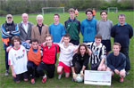
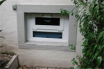
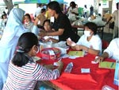
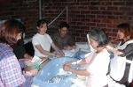
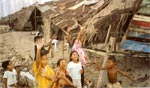
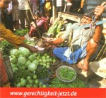
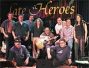

|
|
Das Tanzstudio "Der springende Punkt" hilft
den Flutopfern in Südasien
|
|
|
| Daniela Gaggl vom Springenden Punkt, Anne Wolf, Hannelore Raub, Sybille P�tz von terre des hommes (von links nach rechts). |
Unter dem Motto "Frühling wird's – wir tanzen den
Winter aus" lud das Tanzstudio "Der springende Punkt" im
März 2005 die Familien und Freunde der kleinen und großen
TänzerInnen in das Kuppenheimer Tanzstudio ein.
Zahlreiche tanzbegeisterte Kinder ab 5 Jahre, Jugendliche, Erwachsene
sowie die Tänzerinnen der beiden Vorführgruppen Junges Ensemble
und Studiogruppe gaben an sechs Terminen den begeisterten Gästen
Einblick in die aktuellen Unterrichtsinhalte und in die momentane choreographische
Arbeit. Der "kleine Tanzspaß zwischendurch" bot ein abwechslungsreiches
Programm mit modernem und klassischem Tanz zu unterschiedlichen Musikstilen.
Der Bitte der Tanzpädagogin Susanne Willing-Zunker, nach dem Tanzgenuss
das große Sparschwein, die Luise, kräftig zu füttern,
kamen viele der zahlreichen Gäste gerne nach, denn alles, was Luise
im Bauch hat, wurde für die Flutopferhilfe von terre des hommes
verwendet. Dieser Tage konnte die Spende in Höhe von € 818,- übergeben
werden.
Walter
Skrobanek, zuständiger Koordinator für Indonesien,
wird die Spende für die langfristige Grundsicherung der betroffenen
Kinder und Jugendlichen in der Erdbebenregion Aceh (Sumatra) verwenden.
Terre des hommes baut dort zerstörte Schulen und Sozialeinrichtungen
auf und bildet Lehrer und Sozialarbeiter aus, damit die Menschen wieder
lernen, auf eigenen Beinen zu stehen. Fischern werden Bote repariert
und neue Netze ausgeliefert, damit sich auch diese Familien wieder selbst
versorgen können. |
|
Fußball-Jugend des SV 08 übergibt 1.000 € Spende
|
|
 |
| Eine Abordnung spendablen Fu�balljugend mit Klaus Rei� (links im Bild), Heinz Brink (rechts au�en), Rudolf J�rger (daneben) und Heinz Wolf von terre des hommes. |
Menschlich äußerst betroffen von der verheerenden Flutkatastrophe
in Südasien beschlossen die Spieler der einzelnen Jugendmannschaften
des renommierten Kuppenheimer Fußballvereins, den Tombola-Erlös
des vergangenen Jugendturniers terre des hommes zur Verfügung zu
stellen. Klaus Reiß, der auch
persönliche Geldmittel beisteuerte, und Rudolf Jörger hatten
die Idee und übergaben während eines Jugendtrainings den stattlichen
Spendenscheck an terre des hommes Mittelbaden/Murgtal.
„Es ist mehr als eine honorige Geste, wenn ein Verein, der mit
mehr als 200 aktiven Jugendfußballern jeden Euro eigentlich selbst
benötigt, eine solch große Summe für die Betroffenen
in Aceh (Sumatra, Indonesien) spendet“, so Heinz Wolf von terre
des hommes.
Terre des hommes wird den Betrag über einheimische Partnerorganisationen
Fischerfamilien für die Reparatur der Boote und für neue Netze
zukommen lassen. Damit werden sie in die Lage versetzt, sich wieder selbst
versorgen. Terre des hommes ist seit Jahrzehnten in Indonesien tätig,
auch während des Bürgerkrieges, und konnte bereits wenige Tage
nach der Flut wirksame Hilfe leisten. Über die Helfer vor Ort war
und ist es möglich, schon mit geringen Mitteln aus Deutschland eine
effektive Wiederaufbauarbeit zu leisten. |
|
terre des hommes kritisiert erneut Babyklappen
und anonyme Geburt
|
Im Jahre 2004 wurden in Deutschland mindestens 18 Neugeborene getötet
und weitere 14 lebend ausgesetzt. Gegenüber dem Vorjahr, so die
Kinderhilfsorganisation terre des hommes, sei die Zahl der Tötungen
zwar zurückgegangen, erreichte aber wieder das Niveau der Jahre
1999 bis 2002. Mindestens ein Drittel dieser Fälle ereigneten sich
in Städten und Gemeinden, in denen es Babyklappen und Angebote zur
anonymen Geburt gebe. Obwohl die Zahl dieser Einrichtungen in Deutschland
Rekordniveau erreicht habe, wurden bereits im laufenden Jahr wieder drei
von insgesamt fünf tot aufgefundenen Neugeborenen in Orten registriert,
die über entsprechende Einrichtungen verfügten.
Die aktuellen Zahlen basieren auf Recherchen der Wissenschaftlerinnen
Regula Bott und Christiane Swientek, die bereits in den Vorjahren ähnliche
Untersuchungen durchgeführt haben. Da in der Bundesrepublik keine
amtlichen Statistiken zu diesem Problem geführt werden, stützten
sich die Wissenschaftlerinnen vorwiegend auf Auswertungen von Medienberichten
und Angaben einiger Landeskriminalämter. Dazu erklärte terre
des hommes-Adoptionsexperte Bernd Wacker: »Da den Forscherinnen vermutlich
nicht alle Fälle bekannt geworden sind, handelt es sich hier um Mindestzahlen.« Die
Ergebnisse machten erneut deutlich, dass Frauen, die ihre Neugeborenen
töten, von Angeboten wie Babyklappe und anonymer Geburt nicht erreicht
würden.
Für Babyklappen und Einrichtungen zur anonymen Geburten gibt es
in Deutschland bisher keine gesetzliche Grundlage. Wegen erheblicher
familien- und verfassungsrechtlicher Bedenken ist im vergangenen Jahr
der bereits vierte Versuch, anonyme Geburten per Gesetz zu legalisieren,
gescheitert.
terre des hommes hat bereits mehrfach kritisch zum Thema Babyklappen
und anonyme Geburt Stellung genommen. Durch die neuen Zahlen sieht sich
die Organisation in ihrer Kritik bestätigt: »Dass Babyklappen
und Angebote zur anonymen Geburt das Leben ansonsten vom Tode bedrohter
Neugeborener retten«, so Wacker, »bleibt eine unbewiesene
Behauptung.« Statt diese Einrichtungen zu dulden, sollte der Gesetzgeber
die bestehenden Angebote des deutschen Jugendhilfesystems ausbauen und
stärker bekannt machen. »Wenn mehr Menschen über diese
Möglichkeiten informiert wären«, so der Adoptionsexperte
weiter, »würde sich die Debatte um den scheinbaren Bedarf
an Babyklappen ebenso schnell erübrigen wie die Notwendigkeit einer
gesetzlichen Regelung anonymer Geburt.«
Weitere Informationen:
|
|
100 Tage nach dem Tsunami: Hilfswerke ziehen erste
Bilanz
|
100
Tage nach der großen Tsunami-Katastrophe in Südasien
ist die Phase der akuten Nothilfe in den betroffenen Regionen beendet,
allerdings mit Ausnahme der von den erneuten Erdeben unmittelbar
betroffenen Regionen in Indonesien. Derzeit konzentrieren sich die
Hilfsorganisationen auf den langfristig angelegten Wiederaufbau. Dies
teilten am 4. April Vertreter von fünf deutschen Hilfswerken mit,
die sich zum Bündnis "Gemeinsam für Menschen in Not - Entwicklung
hilft!" zusammengeschlossen haben.
mehr |
|
Aktion: Deine Stimme gegen Armut
|
Im
September 2000 verabschiedeten die Staats- und Regierungschefs von 150
Ländern die "Millenniumserklärung der Vereinten
Nationen" - ein weitreichendes Programm zur Armutsbekämpfung.
Insgesamt acht Ziele sollen bis 2015 umgesetzt sein. Bisher ist dafür
zu wenig passiert.
Das Jahr 2005 wird zum Schlüsseljahr für die Armutsbekämpfung:
Es gibt zwei Termine, an denen die Chefs der wohlhabenden Staaten der
Welt beweisen können, wie ernst es ihnen mit der Millenniumserklärung
und einer Welt ohne Armut ist: Der G8-Gipfel
vom 6.-8. Juli 2005 und die UN-Konferenz
vom 14.-16. September 2005. Deshalb ist jetzt die Zeit
zu handeln.
Über 100 deutsche Nichtregierungsorganisationen (NRO) und Prominente
wie Herbert Grönemeyer, Claudia Schiffer, Anne Will und Xavier
Naidoo erinnern mit der Aktion "Deine Stimme gegen Armut" die
Verantwortlichen an ihre Millenniumserklärung. Die Aktion versteht
sich als Teil der internationalen Kampagne "Global Call to Action
against Poverty", in der bereits mehr als 60 Länder zusammengeschlossen
sind.
Mehr:
|
|
Aktion: Stoppt die Morde an Kindern und Jugendlichen
|
Kolumbien:
In den Vertriebenensiedlungen Bogotás werden Kinder
und Jugendliche systematisch ermordet. Seit 2001
bereits mehr als 250.
Verantwortlich sind paramilitärische Gruppen, die sich zum Teil
offen
dazu bekennen und die staatlichen Behörden schauen zu. terre
des
hommes und seine Partner FEDES und Taller de
Vida (Foto) führen seit vielen
Jahren in Bogotá Hilfsmaßnahmen für gewaltvertriebene
Familien durch.
Vor dem Hintergrund der Morde hat terre des hommes eine
Unterschriftenaktion gestartet, die sich als
Petition an den
kolumbianischen Präsidenten richtet.
Unterschriftenliste
und Petition
Weitere Infos |
|
Kommt dieTsunami-Hilfe auf der indonesischen
Insel Sumatra an?
Zu Besuch im Dorf
Pusong an Acehs Nordküste
|
(von Moritz Kleine-Brockhoff, Frankfurter Rundschau)
Am Morgen geht es von Banda Aceh aus landeinwärts, eine holperige
Autostunde lang bergauf. Links und rechts umhüllen Wolken 2000
Meter hohe Berggipfel. Dann eine Schlaglochstunde bergab: da liegt
sie, Acehs Nordküste. Einige Dörfer am Meer sind ganz und
viele teilweise zerstört, der Tsunami tötete allein dort
10 000 Menschen. Doch von Acehs Nordküste wird wenig berichtet,
da andere Gegenden der indonesischen Provinz noch viel härter
von Beben und Flut getroffen wurden. In einem Teil der Hauptstadt
Banda und an der Westküste steht nichts mehr, 220 000 Menschen
sind dort begraben oder werden vermisst. An der Nordküste gibt
es mehr Überlebende, viele davon - 200 000 - wurden obdachlos.
weiterlesen
|
|
EHRLICH oder ABZOCKER beim Spenden-TÜV
|
 Wer spendet, möchte vor allem eines: Das Geld muss bei den
Bedürftigen ankommen und darf nicht in dunklen Kanälen
versickern. Ein unabhängiges Institut in Berlin zeichnet Hilfsorganisationen
deshalb mit einem Qualitätssiegel aus. Wer spendet, möchte vor allem eines: Das Geld muss bei den
Bedürftigen ankommen und darf nicht in dunklen Kanälen
versickern. Ein unabhängiges Institut in Berlin zeichnet Hilfsorganisationen
deshalb mit einem Qualitätssiegel aus.
Mit der Hilfsbereitschaft anderer Leute krumme Geschäfte machen?
Ein 37-Jähriger aus Bonn hoffte auf den schnellen Büro
und verschickte 600 Ketten-Mails mit dem Absender einer angeblichen
Hilfsorganisation namens „Rescue Live", auf deren Konto
Spenden für die Flutopfer in Südostasien überwiesen
werden sollten. Zum Glück fiel niemand auf den Abzocker herein
und nach einer Anzeige bekam der Vorbestrafte Besuch von der Polizei.
Nun drohen dem dreisten Spendenbetrüger zehn Jahre Haft wegen
gewerblichen Betrugs und Datenfälschung.
„Das Ärgerliche an solchen Fällen ist, dass durch
sie viele Spender verunsichert und vom Helfen abgehalten werden",
sagt Burkhard Wilke vom Deutschen Zentralinstitut
für soziale
Fragen (DZI) in Berlin. Er berichtet auch von gefälschten Handzetteln
mit Spendenaufrufen in Briefkästen und unverplombten Sammelbüchsen
auf der Straße.
Damit hilfsbereite Menschen den Betrügern nicht so leicht auf
den Leim gehen, hat das 1893 gegründete DZI den Spenden-TÜV
eingeführt. Ähnlich wie die Prüfplakette auf dem Auto
für überprüfte Verkehrssicherheit steht, soll das
DZI-Siegel die Seriosität der Spendensammler garantieren.
30 Prozent fallen durch
Ein schwieriger Job. Denn in Deutschland gibt es derzeit - so Expertenschätzungen
- rund 3000 überregional sammelnde Spendenorganisationen. Rund
2,3 Mrd. Euro haben sie allein im Jahr 2003 für humanitäre
und karitative Zwecke zusammengebracht. Einen Überblicküberrund
2 000 dieser Hilfswerke und ihre Ziele hat das DZI in seiner Datenbank
erfasst. Wohltäter, die vom Finanzamt als gemeinnützig
und damit steuerbegünstigt eingestuft wurden, können bei
den Berlinern ein Spenden-Siegel auf freiwilliger Basis beantragen.
Das gilt seit Januar 2004 auch für Organisationen aus den Bereichen
Umwelt-, Natur- und Tierschutz sowie Sport und Kultur.
„Seit Einführung des Siegels 1992 haben 340 Organisationen
versucht, unser Siegel zu bekommen, durchgefallen sind rund 30 Prozent",
berichtet DZI-Geschäftsführer Wilke. Denn die Beurteilungskriterien
der unabhängigen Prüfer sind hart. Genau unter die Lupe
genommen werden zum Beispiel die Werbe- und Informationsarbeit, die
Finanzen sowie die Planungs- und Kontrollstruktur. Hilfswerke, die
mehr als ein Drittel ihrer Gesamtausgaben für Verwaltung und
Werbung ausgeben, haben keine Chance. „Angemessen sind nach
unserer Erfahrung höchstens zehn bis zwanzig Prozent für
diesen Bereich", sagt Burkhard Wilke. Sonst finanzieren die
Spender mit ihrem Geld einen bürokratischen Apparat und die
Arbeit von Werbeagenturen.
Jedes Jahr wird neu geprüft
Die Mitarbeiter des DZI - die meisten von ihnen sind Wirtschaftswissenschaftler
und Sachbearbeiter durchleuchten die Bücher der Hilfsorganisationen,
prüfen deren Finanzen und haben einen Überblick darüber,
wofür die Spenden tatsächlich eingesetzt wurden. Geprüft
wird übrigens jedes Jahr aufs Neue. So wird verhindert, dass
sich jemand auf seinen Lorbeeren ausruht.
Rund 190 Verbände haben bisher den Spenden-TÜV geschafft
und dürfen das Zertifikat des DZI in ihrer Arbeit verwenden.
Allein die dreißig Größten unter ihnen sammelten
im Jahr2003 knapp eine Milliarde Büro. Wer kein Siegel hat,
ist deshalb aber keineswegs automatisch unseriös. Viele Hilfswerke
nehmen die Kritik der DZI-Experten als eine Art Qualitätstest
und versuchen, die Mängel zu beheben. Das ist allerdings nicht
immer leicht, da sehr harte Maßstäbe angelegt werden.
In der Datenbank des Berliner Instituts sind auch Informationen über
die Nicht-Siegel-Träger zu finden, sodass man sich dort vor
einer Spende schlau machen kann. „Wer uns schreibt oder in
dringenden Fällen anruft, bekommt die gewünschten Auskünfte",
so Wilke weiter. Die können auch schon mal negativ ausfallen,
beispielsweise wenn eine Organisation nach Meinung der Berliner Wissenschaftler
zu gefühlsbetont wirbt.
Da Spenden reine Vertrauenssache sind und der Spender- anders als
beim Kauf von Waren - keinen Gegenwert erhält, sollte sich Werbung
für gemeinnützige Zwecke nach Wilkes Meinung ausschließlich
an den Kriterien „wahr und wahrhaftig" orientieren. Und
dass mit dem gesammelten Geld anderer Leute vernünftig gewirtschaftet
wird, ist für den DZI-Geschäftsführer eigentlich eine
Selbstverständlichkeit.
Spendensammler unter der Lupe
„Viele Spender sind verunsichert", bedauert Burkhard
Wilke vom Deutschen Zentralinstitut für soziale Fragen (DZI).
Hilfsorganisationen mit Spendensiegel sind sowohl auf der Homepage
des DZI (www.dzi.de)
oder im so genannten Spenden-Siegel-Bulletin
(2/04) aufgeführt, das gegen drei 55 Cent-Briefmarken beim DZI
bestellt werden kann. Einzelporträts der 187 Spendensiegel-Organisationen
findet ihr im DZI Spenden-Almanach 2004/5.
Auch Risiken von Haustür-
und Straßenwerbung, Patenschaften und Briefwerbung werden hier
genau erklärt. Wer es noch genauer wissen will, kann den 292
Seiten starken Spendenführer beim DZI (Bernadottestraße
94,14195 Berlin) per Post anfordern. Die
Broschüre kostet 9,80
Euro (zuz üglich
1,20 Euro Versandkosten).
Quelle: Punkto 2005. Text: Susan Tuchels Das Kinderhilfswerk terre des hommes Deutschland (tdh) erhält
seit Gründung des DZI ohne Unterbrechung das Spendensiegel,
weil der Verwaltungsaufwand von tdh recht gering ist (etwa 7 %) und
eine hervorragende Projektarbeit geleistet wird. Mit den Spendengeldern
unterstützt tdh 400 kleinere und z.T. besonders problematische
Projekte. Die Schwerpunkte u.a.: Hilfe gegen Kinderarbeit, Kindesmissbrauch
und Kinderhandel, für Aids-Waisen, Straßenkinder Flüchtlingskinder
und bedrohte Minderheiten.
So garantiert tdh, daß Ihre Spende ankommt |
|
Aktionswoche globale Gerechtigkeit
|
Vom 8. bis zum 16. April 2005 findet unter dem Motto "Gerechtigkeit
ist keine Ansichtsache!" eine Aktionswoche statt, die sich für
einen
gerechten Welthandel einsetzt. Hinter dem Aufruf
für Deutschland
steht die Kampagne "Gerechtigkeit jetzt!" - der Vorstand
von terre
des hommes hatte im Dezember 2004 beschlossen,
der Kampagne
beizutreten. Die Aktionswoche findet parallel
in 70 Ländern des
Nordens und des Südens statt.
Ausführliche (Hintergrund-)Informationen, Aktionsideen, PR-Material,
eine umfangreiche Aktionsanleitung (Aktionsheft)
etc.:
|
|
Late Heroes spenden 1.000 € für
Flutopfer - AC „Schlecksl“ übergibt
700 € an
terre des hommes
|
|
 |
| Die Oldie-Band �Late Heroes�, die fast ausschlie�lich aus Mitgliedern der Narrenzunft �Kn�pfle� besteht, in der Besetzung: Corinna Mack und Karin Raupp (Gesang), Ralf Schulz (Rock�n�Roll-Entertainer), Frank Strolz und Jochen Hauns (Lead-Gitarre), Joe Raupp (Akustik-Gitarre), Freddy Emrich (Bass-Gitarre), Henri Sch�fer (Keyboard) und Ossi Kahles (Drums). |
Anlässlich des 22jährigen Bestehens der Narrenzunft „Knöpfle“ Kuppenheim
spielte die Kuppenheimer Oldie-Band „Late Heroes“ am
21. Januar in der Rathausgarage. Trotz kalter Witterung kamen immerhin
rund 300 jüngere und ältere Zuhörer in die Tiefgarage,
wo insbesondere Elvis-Imitator Ralf Schulz mit seiner Stimme und
gekonnten Hüftschwüngen die kälteresistenten Besucher
begeisterte.
Die Bandmitglieder übergaben dieser Tage den stolzen Betrag
von 1.000 Euro (Reinerlös des Benefizkonzerts) an terre des
hommes Murgtal/Mittelbaden. Die Mitarbeiter des Kinderhilfswerks
bedanken sich bei den Initiatoren des Konzerts, allen voran Ossi
Kahles, sowie bei dem Schirmherr Herrn Bürgermeister Karsten
Mußler und beim Landtagsabgeordneten Gunter Kaufmann für
seine Begrüßungsrede.
Franz Ikker vom Hobby-Fußballclub AC „Schlecksl“ ergänzte
die großzügige Spende von „Late Heroes“ um
weitere 700 Euro. AC Schlecksl und die Fußballjugend des SV
08 Kuppenheim übernahmen
die Bewirtung während des Tiefgaragen-Konzerts.
|
|
Kunstwerke aus Naturmaterialien
Stefan Leopold Sztatecsny zeigt
noch bis 30. April seine Werke im Helmut-Dahringer-Haus
|
Leo
Sztatecsny, Landschaftsarchitekt aus Kuppenheim,
ist ein engagierter Mitarbeiter der Kinderhilfsgruppe
"terre des hommes Murgtal/Mittelbaden".
Immer wenn "Not am Mann" ist, steht ist Leo
bereit, sei es beim Stühle schleppen (Konzerte), sei es beim
Auf- und Abbau von Basar und Kinderfest, sei es bei
der Ausrichtung des alljährlich
stattfindenden Kunstmarktes. Beim Kinderfest
organisiert Leo seit Jahren schon die bei mutigen
Kindern sehr beliebte Kletterwand.
Bei der Vernissage im Helmut-Dahringer-Haus in
Gaggenau wies Gastredner Heiner Nagel, ebenfalls
Mitarbeiter von terre des hommes, auf das ehrenamtliche
Engagement von Leo Sztatecsny hin.
Eine große Schar Kunstinteressierter fand
den Weg nach
Gaggenau, so
der Ortsvorsteher von Forbach, Achim Rietz, einige
Stadträte aus
der Umgebung
sowie viele
Kuppenheimer, u. a. Thomas Grochowiak, der bekannte
zeitgenössische Maler,
mit Ehefrau Karin.
Pressbericht der BNN vom 22.03.2005:
Die Farbe Blau in den Händen von Malern vermag
in ihren vielfältigen Abstufungen und Nuancen
die Fantasie zu beflügeln, denn Blau ist die
Farbe des Himmels und des Wassers, die Farbe der
Wünsche und der Träume. Offensichtlich
zählt auch Stefan Leopold Sztatecsny zu jenen
Künstlern, die sich des blauen Couleurs bevorzugt
bedienen, hat er doch seiner Ausstellung im Foyer
des Helmut-Dahringer-Haus den Titel „Reinblau
-Bilder, Objekte, LandArt " verliehen.
Als ein für die Bewohner der Senioreneinrichtung
vorgezogenes Ostergeschenk von hoher Qualität
bezeichnete Andreas Merkel, Vorstandsmitglied der
Gaggenauer Altenhilfe, die rund 50 ausgestellten
Kunstwerke. Seit Jahren schon biete sich das Helmut-Dahringer-Haus
als traditionell gewachsene Begegnungsstätte
für Kulturschaffende und Künstler an.
Clara Sztatecsny, die Tochter des Künstlers,
stimmte die Besucher am Klavier mit versiert interpretierten
Auszügen aus „Die fabelhafte Welt der
Amelie" auf die Vernissage ein. Heiner Nagel
aus Bad Rotenfeis stellte Stefan Leopold Sztatecsny
(„Leo") als einen Künstler vor,
der nach Studien in Wien und Berlin von 1994 bis
1997 im Bauhaus Dessau wirkte und seit 1997 als
Freier Garten- und Landschaftsarchitekt in Kuppenheim
lebt und arbeitet. Seit 2000 widme er sich unter
anderem auch Land-Art-Projekten in Korcula in Kroatien.
Bereits in der Steinzeit, so Nagel, vermochten
Menschen magisch-mystische Jagdszenen auf die Höhlenwände
zu bannen, in der Renaissance rational-wissenschaftlich
zu Werke zu gehen, in der Romantik die Natur als
idealistischen Zufluchtsort zu verklären.
Leo habe intuitiv unterschiedliche Facetten und
Perspektiven aus der Natur, von Landschaften, Pflanzen,
Tieren, Menschen aufgegriffen.
Dabei hätte er keine gesellschaftskritischen
Analysen erstellt,
sondern: „Leo spielt mit
Naturformen
und Schnecken ähnlichen, fossilen
Strukturen,
er spielt mit der Zeit, hebt sie auf, verleugnet
sie, zeigt mit seinen Pflanzen- und
Tierobjekten
neue Sichtweisen auf." Für
seine LandArt-Projekte
arbeite er
in der Natur, gehe in Steinbrüche,
Bergwerke, belebe sie spontan mit anderen Elementen,
kombiniere, gestalte sie nach seinen Vorstellungen
neu. Er zerlege, suche, finde, portraitiere sie
sodann.
Unter dem Titel „Glühender Boden" hat
Stefan Leopold Sztatecsny in eine Kalksteinplatte
feurige Lava integriert und damit die Eruption
eines Vulkans eindrucksvoll symbolisiert. Auf einem
seiner Fotos ist eine Installation mit Kalksteinplatten,
Erden, Meeressalz und Fischen zu sehen, die auf
der Insel Korcula in Kroatien entstanden. „Da
im Steinbruch nur im Winter gearbeitet wird, herrscht
im Sommer jeweils Ruhe, und ich kann dort neue
Landschaften konstruieren", betrachtet es
der Künstler als eine Chance, Kunstwerke aus
Naturmaterialien zu kreieren, „auch wenn
diese nicht für die Ewigkeit geschaffen sind",
denn der nächste Winter kommt unweigerlich
. . .
„Pflanzentiere - freudig erregt" nennt
Sztatecsny
eine Collage, auf der im Wasser treibende trockene
Blätter gleichsam als quirlige Fische
ausgebildet
wurden, „Der Sonnenkönig" eine
andere, wohl
mit einem gewissen Augenzwinkern entstandene und
in Goldgelb gehaltene, in 'die er einen archaischen
Fisch integriert
hat. Einige seiner aparten Werke
muten wie die
Urformen kalligrafischer, prähistorischer
Schriftarten
an. |
|
|
|
 Ansprechpartner Ansprechpartner
|
|
Wolfgang Deppisch
(Projektinfos)
Tel. 07222 / 32927
Heinz Wolf
(Sponsoring, Allgemeines)
Tel. 07225 / 75543
weitere Ansprechpartner
|
|
Erlöse
1992-2012
|
|

Jahr |
Euro |
1992 |
70.000 |
1993 |
75.600 |
1994 |
83.883 |
1995 |
69.617 |
1996 |
51.412 |
1997 |
61.749 |
1998 |
60.333 |
1999 |
68.742 |
2000 |
85.492 |
2001 |
106.375 |
2002 |
78.937 |
2003 |
84.027 |
2004 |
76.662 |
2005 |
149.941 |
2006 |
84.497 |
2007 |
105.958 |
2008 |
104.053 |
2009 |
100.833 |
2010 |
107.254 |
2011 |
103.600 |
| 2012 |
158.250 |
| 2013 |
163.420 |
1977-2013 |
mehr als 2,7 Mio. € |
|
Detailansicht der Erlöszahlen |
|
|


;)
;)
;)
;)
;)
;)
;)
;)